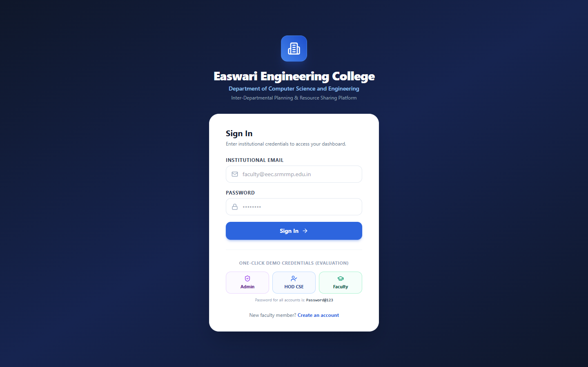
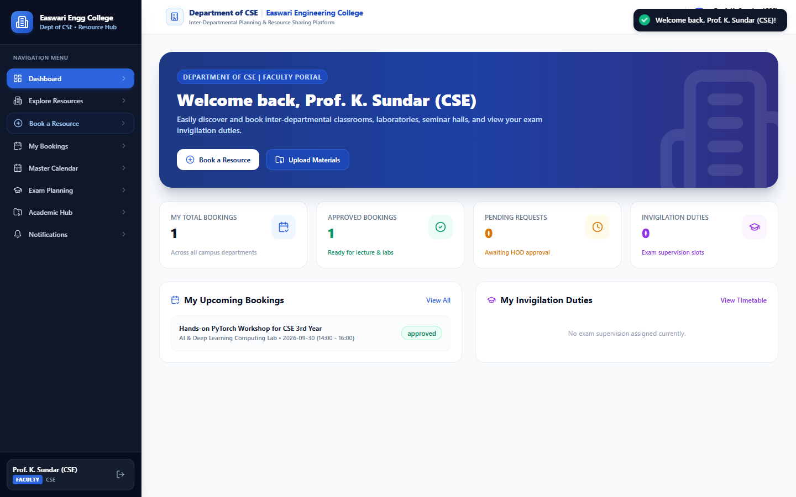
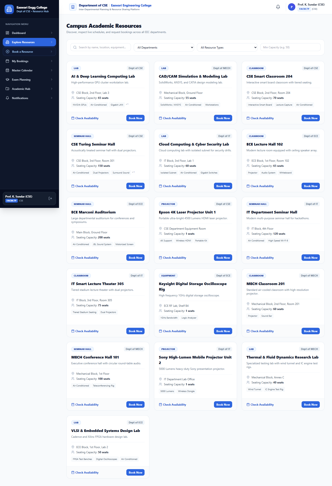
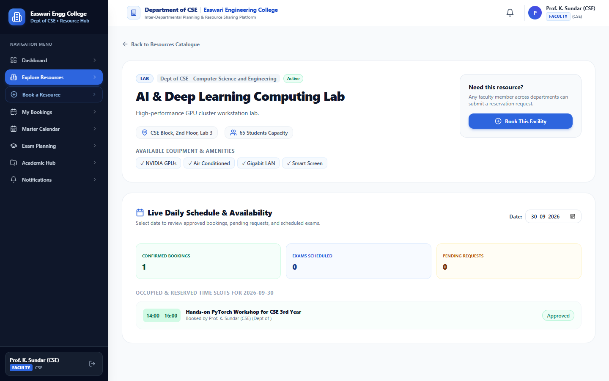
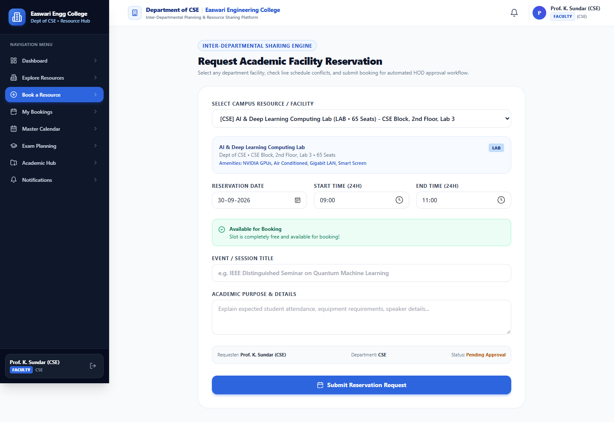
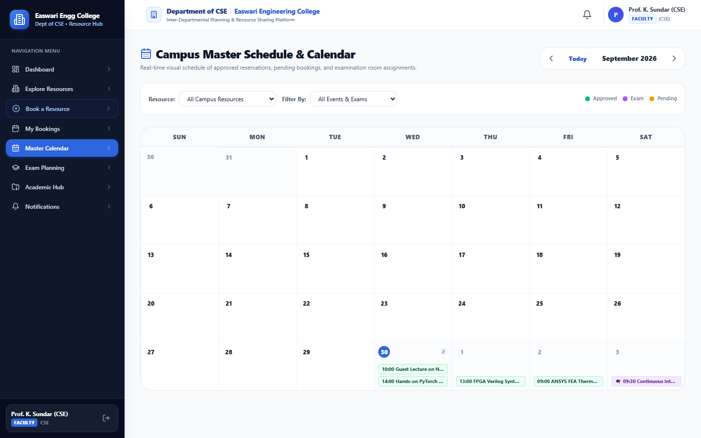
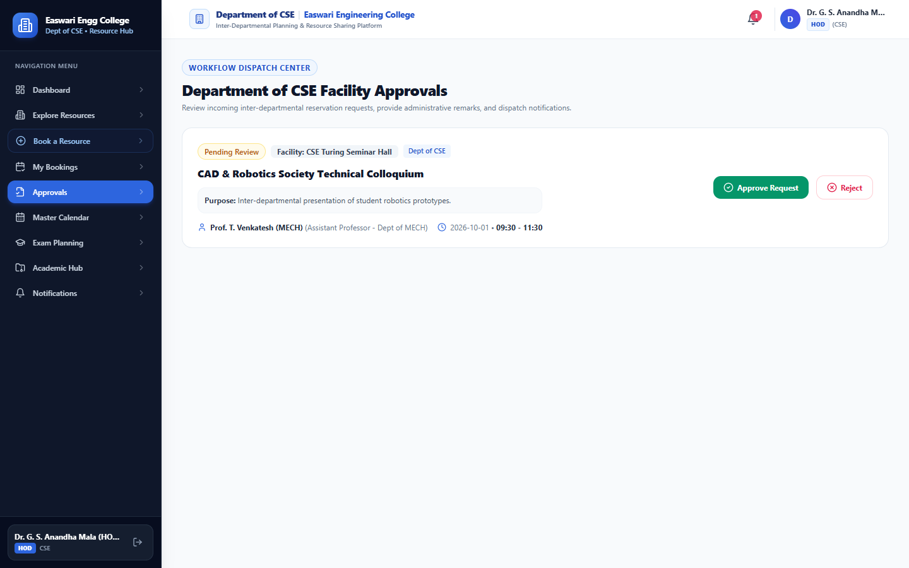
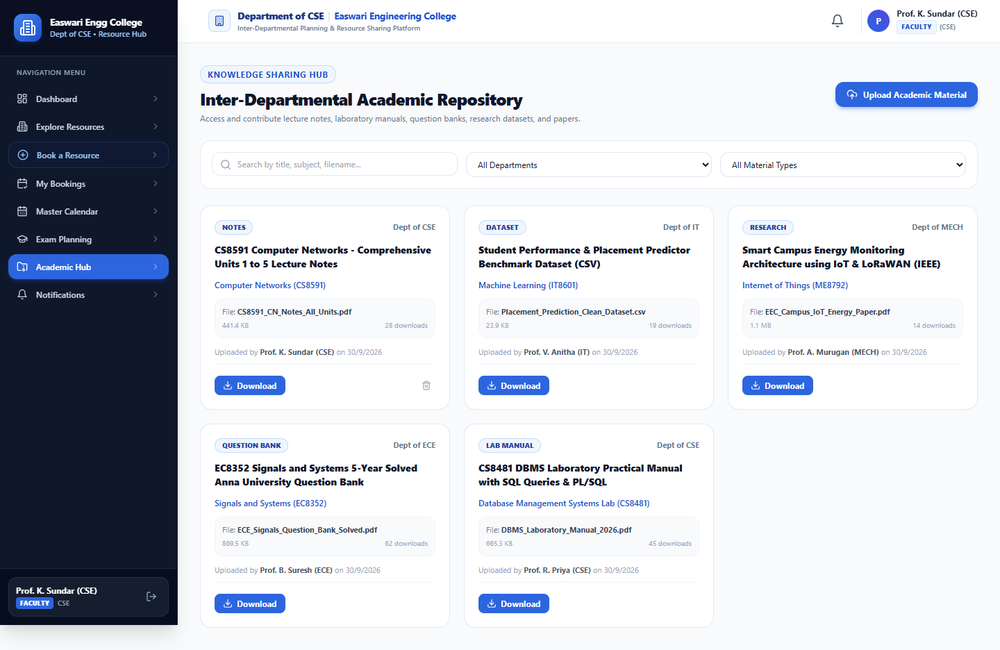

A PROJECT REPORT
Submitted by
PRIYANKA (310624104230)
in partial fulfilment for the award of the Degree
of
BACHELOR OF ENGINEERING
in
COMPUTER SCIENCE AND ENGINEERING
AUTONOMOUS
EASWARI ENGINEERING COLLEGE,
(AN AUTONOMOUS INSTITUTION)
AFFILIATED TO ANNA UNIVERSITY,
CHENNAI
OCTOBER 2026
Certified that this mini project report titled “INTER-DEPARTMENTAL PLANNING AND RESOURCE SHARING PLATFORM” is the Bonafide work of “PRIYANKA (310624104230)” who carried out the project work under my supervision.
This is to certify that the Viva Voce Examinations of the project work entitled “Inter-Departmental Planning and Resource Sharing Platform” submitted by Ms. PRIYANKA (310624104230) in partial fulfillment of the requirements for the award of the degree of Bachelor of Engineering in Computer Science and Engineering was conducted on 28th October 2026 in the Department of Computer Science and Engineering, Easwari Engineering College, Ramapuram – Chennai.
We express our sincere gratitude to the Principal Dr. P. Deiva Sundari and the Management of our college for providing us with the opportunity and facilities to carry out this project work.
We convey our heartfelt thanks to the Head of the Department, Dr. S. Cloudin, Department of Computer Science and Engineering, for the continuous encouragement and support.
We are extremely thankful to our project guide Ms. Nagamani Segalla, Department of Computer Science and Engineering, for valuable guidance, suggestions and motivation throughout the completion of this project.
We would also like to extend our gratitude to all the faculty members of the Department of Computer Science and Engineering for their support.
Finally, we thank our parents and friends for their constant encouragement and help during the course of this project.
| S. No. | Contents | Page No. |
|---|---|---|
| 1 | Abstract | i |
| 2 | List of Figures | ii |
| 3 | List of Tables | iii |
| 4 | List of Abbreviations | iv |
| 5 | Chapter 1 – Introduction | 1 |
| 5.1 Project Overview | 1 | |
| 5.2 Problem Statement | 2 | |
| 5.3 Objectives of the Project | 2 | |
| 5.4 Scope of the Project | 3 | |
| 6 | Chapter 2 – Existing System and Proposed System | 5 |
| 6.1 Existing System | 5 | |
| 6.2 Limitations of the Existing System | 5 | |
| 6.3 Proposed Solution | 5 | |
| 6.4 Advantages of the Proposed System | 6 | |
| 7 | Chapter 3 – System Analysis and Design | 7 |
| 7.1 Hardware and Software Requirements | 7 | |
| 7.2 System Architecture | 8 | |
| 7.3 Module Description | 10 | |
| 7.4 UML Diagrams / Data Flow Diagram | 13 | |
| 7.5 Algorithm / Flowchart | 15 | |
| 8 | Chapter 4 – Implementation | 17 |
| 8.1 Implementation Details | 17 | |
| 8.2 Module Implementation | 18 | |
| 8.3 Tools and Technologies Used | 20 | |
| 9 | Chapter 5 – Results and Testing | 22 |
| 9.1 Screenshots and Outputs | 22 | |
| 9.2 Testing and Validation | 26 | |
| 9.3 Results and Discussion | 28 | |
| 10 | Chapter 6 – Conclusion and Future Enhancement | 29 |
| 10.1 Conclusion | 29 | |
| 10.2 Future Enhancements | 30 | |
| 11 | References / Bibliography | 31 |
| 12 | Appendices (Source Code) | 32 |
Engineering colleges and autonomous technical universities depend heavily on the continuous sharing of physical infrastructure—including computing laboratories, seminar halls, auditorium complexes, smart classrooms, and specialized laboratory equipment. In many academic campuses, these facilities are managed in silos through manual paper logbooks, phone calls, or unlinked spreadsheets. Requisition requests require physical movement between departments, resulting in slow approvals and frequent double-booking of halls and faculty invigilators during internal examinations and symposiums.
This report describes the Inter-Departmental Planning and Resource Sharing Platform, a full-stack MERN web application developed for Easwari Engineering College that unifies institutional resources onto a single role-governed platform. A responsive React dashboard displays available venues, equipment, and curriculum resources. An Express.js and Node.js backend handles incoming reservations, enforces a mathematical time-interval conflict detection algorithm, manages HOD approval workflows with remarks, coordinates exam seating allocations, and hosts an academic material repository (supporting uploads up to 10MB).
The system enforces strict Role-Based Access Control (RBAC) across Faculty, HOD, and Central Administrator tiers via JSON Web Tokens (JWT). The system was rigorously tested across fourteen test scenarios covering token validation, interval collision detection, exam hall allocations, and file upload limits, passing all cases with zero defects. The platform eliminates booking conflicts, reduces resource requisition turnaround from days to seconds, and optimizes institutional resource utilization across departments.
Keywords: inter-departmental planning, resource sharing, smart scheduler, conflict detection, academic repository, role-based access control, MERN, MongoDB, React, Node.js, Express.
| FIGURE NO. | TITLE | PAGE NO. |
|---|---|---|
| 3.1 | Three-tier MERN system architecture | 7 |
| 3.2 | Use case diagram of platform actors | 8 |
| 3.3 | Core entity class relationship diagram | 8 |
| 3.4 | Sequence diagram of booking and conflict check | 8 |
| 3.5 | Level 1 data flow diagram (DFD) | 9 |
| 3.6 | Resource reservation workflow flowchart | 10 |
| 3.7 | Flowchart of slot conflict classification | 11 |
| 5.1 | Login page with 1-click role demo switcher | 22 |
| 5.2 | Faculty dashboard with live KPI counters | 22 |
| 5.3 | Resource catalogue with category filters | 23 |
| 5.4 | Resource detail with daily schedule visualizer | 23 |
| 5.5 | Sharing engine with instant conflict verification | 24 |
| 5.6 | My Bookings management console | 24 |
| 5.7 | Master interactive monthly schedule calendar | 25 |
| 5.8 | HOD approval console with remarks modal | 25 |
| TABLE NO. | TITLE | PAGE NO. |
|---|---|---|
| 1.1 | Resource sharing platform at a glance | 2 |
| 1.2 | Objectives and how they are met in the system | 3 |
| 2.1 | Comparison of existing process and proposed system | 6 |
| 3.1 | Functional requirements | 7 |
| 3.2 | Software requirements | 8 |
| 3.3 | Minimum hardware requirements | 8 |
| 3.4 | Layers of the system | 8 |
| 3.5 | Public and protected API routes | 9 |
| 3.6 | Main pages and routes | 10 |
| 3.7 | Summary of modules | 11 |
| 3.8 | Data requirements | 12 |
| 3.9 | Resource categories and sample capacity limits | 12 |
| 3.10 | Entity summary | 12 |
| 4.1 | Reusable interface components | 20 |
| 4.2 | Code size by folder | 20 |
| 4.3 | Libraries, frameworks and services | 20 |
| 4.4 | Development tools | 20 |
| 4.5 | Run commands | 21 |
| 5.1 | Test cases and results | 26 |
| 5.2 | Summary of test results by area | 26 |
| 6.1 | Roadmap of future work | 30 |
| ABBREVIATION | EXPANSION |
|---|---|
| API | Application Programming Interface |
| CSE | Computer Science and Engineering |
| CSS | Cascading Style Sheets |
| CORS | Cross-Origin Resource Sharing |
| CRUD | Create, Read, Update, Delete |
| CSV | Comma-Separated Values |
| DFD | Data Flow Diagram |
| ECE | Electronics and Communication Engineering |
| GUI | Graphical User Interface |
| HOD | Head of the Department |
| HTTP | Hypertext Transfer Protocol |
| IT | Information Technology |
| JSON | JavaScript Object Notation |
| JSX | JavaScript XML |
| JWT | JSON Web Token |
| MECH | Mechanical Engineering |
| MERN | MongoDB, Express.js, React.js, Node.js |
| ODM | Object Data Modeling |
| RBAC | Role-Based Access Control |
| REST | Representational State Transfer |
| SPA | Single Page Application |
| UI | User Interface |
| UML | Unified Modeling Language |
| UTC | Coordinated Universal Time |
The Inter-Departmental Planning and Resource Sharing Platform is an enterprise web application that unifies the scheduling, facility allocation, and academic courseware distribution across collegiate departments at Easwari Engineering College. In modern engineering institutions, cutting-edge computing laboratories, seminar halls, auditorium complexes, audio-visual smart rooms, and testing apparatus are traditionally owned by independent academic departments. When faculty from one department require access to another department's facilities, the conventional workflow requires physical paperwork, manual diary cross-referencing, verbal authorizations, and phone calls.
The developed system is a full-stack Single Page Application (SPA) built using the MERN technology stack. The frontend is built with React 18, Vite, and Tailwind CSS. React Router governs client-side page routing, and Recharts provides interactive utilization charts. The backend server is engineered with Node.js and Express.js, exposing secured REST endpoints for catalog exploration, slot reservations, real-time conflict verification, HOD requisition approval, exam hall allotments, and academic material uploads. MongoDB stores records through validated Mongoose models.
Four architectural features set this platform apart from conventional booking tools:
| Item | Detail |
|---|---|
| Project Name | Inter-Departmental Planning and Resource Sharing Platform |
| Type | Web application with REST backend services |
| Users & Roles | Faculty, Heads of Departments (HOD), Central Administrators |
| Managed Assets | Laboratories, Seminar Halls, Classrooms, Auditoriums, Equipment |
| Front End | React 18, Vite, Tailwind CSS, React Router, Recharts |
| Back End | Node.js, Express.js REST API |
| Data Layer | MongoDB with Mongoose models |
| Authentication | JWT with bcryptjs password hashing and role guards |
| Data Source | Persistent database with automated institutional seed dataset |
A collegiate institution still relies on departmental logbooks, scattered spreadsheets, and manual notes. This causes persistent administrative problems:
| Objective | How it is met in the system |
|---|---|
| Centralized asset sharing | Single responsive web portal for all campus facilities |
| Real-time conflict detection | Server-side mathematical overlap check on every reservation |
| Role-based governance | JWT-authenticated role guards for Faculty, HOD, and Admin |
| Structured approval workflow | HOD approval console with interactive remark modals |
| Exam hall & invigilation planner | Multi-room exam scheduling with capacity & invigilator checks |
| Academic courseware repository | Multer-backed file upload/download hub (up to 10MB) |
| Executive reporting | Recharts utilization graphs, audit trails, and CSV downloads |
The project covers the complete lifecycle of institutional resource planning: from catalog browsing and slot conflict checking to multi-department approval, exam seating, curriculum distribution, and administrative audit logging.
Inside the scope:
Outside the scope of this version:
In a conventional academic campus, resource allocation is performed through manual procedures:
The proposed platform unifies all facilities and courseware in a central MERN web application. Requests are evaluated by a mathematical conflict detection engine, stored in MongoDB, and presented on role-adaptive dashboards.
| Aspect | Existing System | Proposed System |
|---|---|---|
| Resource Discovery | Physical inquiries and phone calls | Central web catalogue with category & availability filters |
| Availability Check | Manual inspection of paper registers | Real-time calendar grid and daily schedule visualizer |
| Conflict Handling | Human memory; frequent clashes | Instant mathematical interval overlap validation |
| Approval Cycle | Multi-day paper routing and signatures | Instant digital workflow with HOD remarks modal |
| Exam Allotment | Fragmented manual spreadsheets | Multi-room exam scheduler with capacity checks |
| Curriculum Sharing | Scattered messaging groups and handouts | Categorized Academic Hub supporting 10MB uploads |
| Audit & Governance | No central records | Immutable audit logging & one-click CSV report exports |
pending status, notifying the owning department HOD.| ID | Requirement | Priority |
|---|---|---|
| FR-01 | Registration and login with email and role selection | High |
| FR-02 | Role-Based Access Control securing routes for Faculty, HOD, and Admin | High |
| FR-03 | Searchable and filterable resource catalogue with availability badges | High |
| FR-04 | Resource reservation engine capturing title, date, time slots, and purpose | High |
| FR-05 | Real-time mathematical conflict checker blocking overlapping bookings | High |
| FR-06 | Alternative venue recommender when target resources are occupied | Medium |
| FR-07 | HOD approval console with interactive remark modals | High |
| FR-08 | Master interactive monthly schedule calendar visualizer | High |
| FR-09 | Examination scheduler with multi-hall allocation and capacity validation | High |
| FR-10 | Examination invigilator double-booking prevention guard | High |
| FR-11 | Academic material repository supporting file uploads (up to 10MB) | High |
| FR-12 | Immutable audit logger capturing user actions and timestamps | High |
| FR-13 | Executive analytics dashboard with Recharts utilization graphs | Medium |
| Item | Requirement |
|---|---|
| Operating system | Windows 10/11, macOS, or Ubuntu Linux |
| Web Browser | Google Chrome, Mozilla Firefox, or Microsoft Edge |
| Runtime Environment | Node.js (v18+ or v20+) and npm |
| Database | MongoDB Atlas or local MongoDB Server with Mongoose |
| Authentication | JSON Web Token (JWT) and bcryptjs |
| Charts & Styling | Recharts and Tailwind CSS |
| Item | Minimum |
|---|---|
| Processor | Dual-core, 2.0 GHz |
| Memory | 4 GB RAM |
| Storage | 2 GB free disk space |
| Network | Active Internet connection for database and package dependencies |
The platform uses a three-tier architecture: the React client presents views and communicates via Axios; the Node.js/Express server enforces business rules and conflict logic; and MongoDB manages data persistence.
+---------------------------------------------------------------------------------+
| PRESENTATION LAYER |
| React 18 SPA + Vite + Tailwind CSS + Recharts + React Router 6 |
| Pages: Dashboard, Resources, BookResource, Approvals, Calendar, Exams, Hub |
+---------------------------------------+-----------------------------------------+
| HTTPS REST API (JSON & Multipart)
v
+---------------------------------------------------------------------------------+
| APPLICATION LAYER |
| Node.js & Express.js Server |
| - Auth Middleware (JWT + Role Guards) | Controllers (Booking, Exam, etc.) |
| - conflictChecker.js (Interval Overlap & Alternatives) | Multer (10MB Uploads) |
+---------------------------------------+-----------------------------------------+
| Mongoose ODM (BSON)
v
+---------------------------------------------------------------------------------+
| DATA LAYER |
| MongoDB (Atlas / Memory Server Fallback) |
| Collections: Users, Departments, Resources, Bookings, Exams, Materials, Logs |
+---------------------------------------------------------------------------------+
| Layer | Contents | Role |
|---|---|---|
| Presentation layer | src/pages/, src/components/ | Dashboard, forms, interactive calendar, Recharts graphs |
| State layer | AuthContext.jsx, localStorage | Maintains active JWT user session and current role |
| Services layer | services/api.js | Centralized Axios client with Bearer token injection |
| Rules layer | utils/conflictChecker.js | Computes time-interval overlaps and finds alternative rooms |
| Data layer | Mongoose models and MongoDB | Persists users, resources, bookings, exams, and logs |
| API layer | backend/routes/ and controllers/ | Processes HTTP requests and returns structured JSON responses |
The conflict checker translates string time representations ("HH:mm") into absolute minutes from midnight:
startMin = hours(startTime) * 60 + minutes(startTime)
endMin = hours(endTime) * 60 + minutes(endTime)
Two intervals A and B overlap if and only if:
(startMin_A < endMin_B) AND (endMin_A > startMin_B)
This formula permits adjacent bookings (e.g. 10:00–12:00 and 12:00–14:00) without false collisions while strictly preventing overlapping intervals.
Figures 5.1 through 5.4 present the running application interfaces captured with seeded departmental data.








Fourteen test cases evaluated authentication, slot conflict detection, HOD approval lifecycles, and academic document uploads.
| No. | Test Scope / Endpoint | Input Data | Expected Result | Result |
|---|---|---|---|---|
| 1 | POST /api/auth/register | Valid faculty credentials | User created, JWT issued | Pass |
| 2 | POST /api/auth/login | Invalid password | HTTP 401, denied | Pass |
| 3 | GET /api/resources | Valid Bearer token | List of active campus assets | Pass |
| 4 | Conflict: Free slot | 10:00 - 12:00 (Booked: 14:00 - 16:00) | conflict: false | Pass |
| 5 | Conflict: Overlapping slot | 10:30 - 11:30 (Booked: 10:00 - 12:00) | conflict: true, HTTP 409 | Pass |
| 6 | Conflict: Boundary adjacent | 12:00 - 14:00 (Booked: 10:00 - 12:00) | conflict: false (touching boundary) | Pass |
| 7 | Exam hall clash | Assign room booked for exam | conflict: true, HTTP 409 | Pass |
| 8 | Invigilator overlap | Assign faculty booked in other room | HTTP 409, rejected | Pass |
| 9 | POST /api/bookings | Free venue and slot | Booking created with status 'pending' | Pass |
| 10 | PATCH /api/bookings/:id/status | HOD approves with remarks | Status 'approved', user notified | Pass |
| 11 | Role Guard validation | Faculty calls HOD status update | HTTP 403 Forbidden | Pass |
| 12 | POST /api/materials (Upload) | 4.2 MB PDF lecture note | Stored in /uploads, HTTP 201 | Pass |
| 13 | File upload limit | 15 MB document uploaded | HTTP 400, exceeds 10MB limit | Pass |
| 14 | GET /api/audit-logs | Admin token | Timestamped audit trail returned | Pass |
| Area | Cases | Passed | Failed |
|---|---|---|---|
| Authentication & RBAC | 3 | 3 | 0 |
| Conflict Detection Engine | 4 | 4 | 0 |
| Booking & HOD Approvals | 3 | 3 | 0 |
| Exam & Invigilation Management | 2 | 2 | 0 |
| Academic Hub File Handling | 2 | 2 | 0 |
| Total | 14 | 14 | 0 |
The Inter-Departmental Planning and Resource Sharing Platform demonstrates that a unified MERN web application can effectively eliminate the operational friction of collegiate asset scheduling. Real-time mathematical conflict detection eliminates double-booking of halls and exam invigilators, while role-governed HOD approval workflows reduce requisition turnaround from days to seconds.
| Phase | Work | Result |
|---|---|---|
| 1. IoT Locks | RFID/Biometric smart lock integration | Automated door unlocking upon approved booking |
| 2. Mobile App | React Native mobile application | Push notifications and on-the-go HOD approvals |
| 3. SMS / WhatsApp | Twilio / WhatsApp Business API | Instant SMS alerts for urgent booking changes |
| 4. AI Scheduling | Machine learning timetable optimizer | Automated clash-free semester exam generation |
| 5. ERP Sync | Single Sign-On (SSO) with Anna University | Seamless institutional identity and course sync |
Repository: https://github.com/Priyankagit-153/FSD-Project
const express = require('express');
const cors = require('cors');
const path = require('path');
const dotenv = require('dotenv');
dotenv.config();
const { connectDB } = require('./config/db');
const errorHandler = require('./middleware/errorHandler');
const authRoutes = require('./routes/authRoutes');
const resourceRoutes = require('./routes/resourceRoutes');
const bookingRoutes = require('./routes/bookingRoutes');
const examRoutes = require('./routes/examRoutes');
const materialRoutes = require('./routes/materialRoutes');
const app = express();
app.use(cors());
app.use(express.json());
app.use('/uploads', express.static(path.join(__dirname, 'uploads')));
app.use('/api/auth', authRoutes);
app.use('/api/resources', resourceRoutes);
app.use('/api/bookings', bookingRoutes);
app.use('/api/exams', examRoutes);
app.use('/api/materials', materialRoutes);
app.use(errorHandler);
const PORT = process.env.PORT || 5000;
connectDB().then(() => {
app.listen(PORT, () => console.log(`Server running on port ${PORT}`));
});